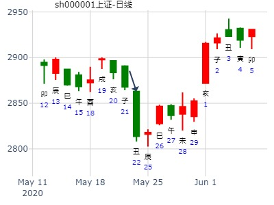
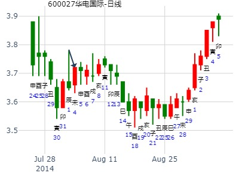

飞神伏神之地风升，占子病。
伏神值日时出来。
占事：大盘走势 2017年大盘走势。地风升静卦。 ThomasCat
公历起卦时间：2017年1月6日9时30分 (手工指定)
丙申年 辛丑月 癸巳日 丁巳时 （日空：午未）
震宫：地风升
六神 伏神 本 卦
白虎 官鬼癸酉金 ▅▅ ▅▅
腾蛇 父母癸亥水 ▅▅ ▅▅
勾陈 子孙庚午火 妻财癸丑土 ▅▅ ▅▅ 世
朱雀 官鬼辛酉金 ▅▅▅▅▅
青龙 兄弟庚寅木 父母辛亥水 ▅▅▅▅▅
玄武 妻财辛丑土 ▅▅ ▅▅ 应
摇卦时世爻得日月之助。全年看涨。尤其午未出空时大涨。
子月子孙月破，跌。卯月兄弟旺又跌。
211222
风生水起 占事：600662下周 起卦方式：手动摇卦
公历时间：2016年2月27日8时28分
干 支：丙申年 庚寅月 己卯日 戊辰时
旬 空：辰巳 午未 申酉 戌亥
震宫：地风升
六神 伏 神 【本 卦】
勾陈 ▄▄ ▄▄ 官鬼癸酉金
朱雀 ▄▄ ▄▄ 父母癸亥水
青龙 子孙庚午火 ▄▄ ▄▄ 妻财癸丑土 世
玄武 ▄▄▄▄▄ 官鬼辛酉金
白虎 兄弟庚寅木 ▄▄▄▄▄ 父母辛亥水
螣蛇 ▄▄ ▄▄ 妻财辛丑土 应
巳日大跌，飞神冲开，伏神露出，大跌一天。
占事：2022年2月28日，问上证3月整体涨跌。升静卦。暴跌
时间: 2022-02-28 09：23
干支: 壬寅年壬寅月壬子日 (旬空: 寅卯 )
升静卦
白虎 ▅▅ ▅▅ 官鬼酉金
腾蛇 ▅▅ ▅▅ 父母亥水
勾陈 子孙午火▅▅ ▅▅ 妻财丑土 世
朱雀 ▅▅▅▅▅ 官鬼酉金
青龙 兄弟寅木▅▅▅▅▅ 父母亥水
玄武 ▅▅ ▅▅ 妻财丑土 应
2022年3月暴跌，卦名很好，但是子孙午火被日冲飞。
财福都无力。
点香起的卦,明日上海大盘走势
2007年 3月 1日 22时 56分 (起卦方式：手动指定)
明日上海大盘走势
元亨利贞网六爻排盘程序 http://www.china95.net
干支：丁亥年 壬寅月 甲午日 乙亥时 日空亡：辰巳
神煞：驿马－申 桃花－卯 日禄－寅 贵人－丑，未
震宫：地风升 震宫：地风升
六神 伏神 本 卦 变 卦
玄武 官鬼酉金 ▅▅ ▅▅ 官鬼酉金 ▅▅ ▅▅
白虎 父母亥水 ▅▅ ▅▅ 父母亥水 ▅▅ ▅▅
螣蛇 子孙午火 妻财丑土 ▅▅ ▅▅ 世 妻财丑土 ▅▅ ▅▅ 世
勾陈 官鬼酉金 ▅▅▅▅▅ 官鬼酉金 ▅▅▅▅▅
朱雀 兄弟寅木 父母亥水 ▅▅▅▅▅ 父母亥水 ▅▅▅▅▅
青龙 妻财丑土 ▅▅ ▅▅ 应 妻财丑土 ▅▅ ▅▅ 应
主帖标题: 期铜铝锌贴
占事：铜906明天走势？ 起法：手动摇卦 国际易经网
公历：2009年3月16日13时10分 开元财经 六爻排盘系统期货版
干支：己丑年 丁卯月 庚申日 癸未时 (旬空：子丑)
震宫：地风升
螣蛇 ▅▅ ▅▅ 官鬼癸酉金
勾陈 ▅▅ ▅▅ 父母癸亥水
朱雀 子孙庚午火 ▅▅ ▅▅ 妻财癸丑土 世
青龙 ▅▅▅▅▅ 官鬼辛酉金
玄武 兄弟庚寅木 ▅▅▅▅▅ 父母辛亥水
白虎 ▅▅ ▅▅ 妻财辛丑土 应
出生：安弟子 占事：601908京运通从明天到下周五的走势
排卦：元亨利贞网六爻在线排盘系统
公历起卦时间：2015年3月3日19时48分 (手工指定)
干支：乙未年 戊寅月 戊寅日 壬戌时 （日空：申酉）
震宫：地风升 震宫：地风升
六神 伏神 本 卦 变 卦
朱雀 官鬼癸酉金 ▅▅ ▅▅
青龙 父母癸亥水 ▅▅ ▅▅
玄武 子孙庚午火 妻财癸丑土 ▅▅ ▅▅ 世
白虎 官鬼辛酉金 ▅▅▅▅▅
腾蛇 兄弟庚寅木 父母辛亥水 ▅▅▅▅▅
勾陈 妻财辛丑土 ▅▅ ▅▅ 应
转发“个股卦例及反馈”
占五粮液3月8日至12日如何走？ [複製鏈接]
排卦：元亨利贞网六爻在线排盘系统 https://www.china95.net
公历起卦时间：2021年3月5日9时58分 (电脑自动)
干支：辛丑年 庚寅月 壬子日 乙巳时 （日空：寅卯）
神煞：驿马－寅 桃花－酉 日禄－亥 贵人－卯，巳
震宫：地风升 震宫：地风升
六神 伏神 本 卦 变 卦
白虎 官鬼癸酉金 ▅▅ ▅▅ 官鬼癸酉金 ▅▅ ▅▅
螣蛇 父母癸亥水 ▅▅ ▅▅ 父母癸亥水 ▅▅ ▅▅
勾陈 子孙庚午火 妻财癸丑土 ▅▅ ▅▅ 世 妻财癸丑土 ▅▅ ▅▅ 世
朱雀 官鬼辛酉金 ▅▅▅▅▅ 官鬼辛酉金 ▅▅▅▅▅
青龙 兄弟庚寅木 父母辛亥水 ▅▅▅▅▅ 父母辛亥水 ▅▅▅▅▅
玄武 妻财辛丑土 ▅▅ ▅▅ 应 妻财辛丑土 ▅▅ ▅▅ 应
巳日一般冲飞露伏，兄弟寅木出来，跌，此处为涨，莫非为空有关系？
占事：422-426三七互娱行情--金
时间: 2024-04-22 21：10
干支: 甲辰年戊辰月丙辰日 (旬空: 子丑 )
地风升
青龙 ▅▅ ▅▅ 官鬼酉金
玄武 ▅▅ ▅▅ 父母亥水
白虎 子孙午火▅▅ ▅▅ 妻财丑土 世
腾蛇 ▅▅▅▅▅ 官鬼酉金
勾陈 兄弟寅木▅▅▅▅▅ 父母亥水
朱雀 ▅▅ ▅▅ 妻财丑土 应
王注：亥水入辰墓，故巳日反而跌。未日日破。
世应皆空，短线下跌原因？
巳日冲飞露伏，跌。申日兄弟日破。
5月26-30日大盘涨跌卦！
公历时间：2008年5月23日15时49分 星期五
干支：戊子年 丁巳月 癸亥日 庚申时 (旬空：子丑)
升静卦
白虎 ▅▅ ▅▅ 官鬼酉金
腾蛇 ▅▅ ▅▅ 父母亥水
勾陈 子孙午火▅▅ ▅▅ 妻财丑土 世
朱雀 ▅▅▅▅▅ 官鬼酉金
青龙 兄弟寅木▅▅▅▅▅ 父母亥水
玄武 ▅▅ ▅▅ 妻财丑土 应
世应旬空。动态旬空又为戌亥空。
收购中信国金消息对601998中信银行近期股价的影响：积极
中信银行[601998]未来走势？
起卦方式：手工指定 www.iqing.net 线上排盘系统
公历时间：2009年5月9日9时55分 星期六
干支：己丑年 己巳月 甲寅日 己巳时 (旬空：子丑)
神煞：驿马—申 桃花—卯 日禄—寅 贵人—丑，未
震宫：地风升
六神 伏 神 【本 卦】
玄武 ▅▅ ▅▅ 官鬼癸酉金
白虎 ▅▅ ▅▅ 父母癸亥水
螣蛇 子孙庚午火 ▅▅ ▅▅ 妻财癸丑土 世
勾陈 ▅▅▅▅▅ 官鬼辛酉金
朱雀 兄弟庚寅木 ▅▅▅▅▅ 父母辛亥水
青龙 ▅▅ ▅▅ 妻财辛丑土 应
下周25至29日上证走势
庚子年辛巳月乙丑日丙子时 (戌亥空) 庚子年四月三十(2020/05/22 00:34:32)
地风升
玄武 官鬼酉金 ∥
白虎 父母亥水 ∥
子孙午火：腾蛇 妻财丑土 ∥ 震
勾陈 官鬼酉金 ／
兄弟寅木：朱雀 父母亥水 ／
青龙 妻财丑土 ∥ 应

摇卦当天暴跌，百思不得其解？
巳日冲实飞神，涨。
5.18是涨？跌？幅度如何？（5）
时间: 2021-05-17
干支: 辛丑年癸巳月乙丑日 (旬空: 戌亥 )
300491:
震宫：地风升
六神 伏神 本 卦
玄武 官鬼癸酉金 ▅▅ ▅▅
白虎 父母癸亥水 ▅▅ ▅▅
螣蛇 子孙庚午火 妻财癸丑土 ▅▅ ▅▅ 世
勾陈 官鬼辛酉金 ▅▅▅▅▅
朱雀 兄弟庚寅木 父母辛亥水 ▅▅▅▅▅
青龙 妻财辛丑土 ▅▅ ▅▅ 应
收小阴，接近平盘 ， 或许不准，参考自负
600490：艮宫：山泽损
六神 伏神 本 卦
玄武 官鬼丙寅木 ▅▅▅▅▅ 应
白虎 妻财丙子水 ▅▅ ▅▅
螣蛇 兄弟丙戌土 ▅▅ ▅▅
勾陈 子孙丙申金 兄弟丁丑土 ▅▅ ▅▅ 世
朱雀 官鬼丁卯木 ▅▅▅▅▅
青龙 父母丁巳火 ▅▅▅▅▅
收阳，大阳线，或许不准，参考自负
地风升静卦。627-708大盘安全否？经典见顶。后面的未月，妻财月破，就跌。
时间: 2022-06-24 13：31
干支: 壬寅年丙午月戊申日 (旬空: 寅卯 )
升静卦
朱雀 ▅▅ ▅▅ 官鬼酉金
青龙 ▅▅ ▅▅ 父母亥水
玄武 ▅▅ ▅▅ 妻财丑土 世
白虎 ▅▅▅▅▅ 官鬼酉金
腾蛇 ▅▅▅▅▅ 父母亥水
勾陈 ▅▅ ▅▅ 妻财丑土 应
丑土的个性，巳午月旺象，到了未月立马泄气。月破的力量。
[原创] 预测7月6日上海大盘走势
其实金眼牛贴地这个卦信息很清楚。地雷升：地为缉拿底信号，雷为震天响地东西，升地猛。请易经高手解大盘7月6日涨跌卦!
占事：7月6日大盘涨跌?
公历时间：2007年7月5日15时23分 星期四
干支：丁亥年 丙午月 庚子日 甲申时 (旬空：辰巳)
震宫：地风升
六神 伏 神 【本 卦】
螣蛇 ▅▅ ▅▅ 官鬼癸酉金
勾陈 ▅▅ ▅▅ 父母癸亥水
朱雀 子孙庚午火 ▅▅ ▅▅ 妻财癸丑土 世
青龙 ▅▅▅▅▅ 官鬼辛酉金
玄武 兄弟庚寅木 ▅▅▅▅▅ 父母辛亥水
白虎 ▅▅ ▅▅ 妻财辛丑土 应
7月21-25日大盘涨跌卦
占事：7月21-25日大盘涨跌
公历时间：2008年7月18日15时31分星期五
干支：戊子年 己未月 己未日 壬申时 (旬空：子丑)
震宫：地风升
六神 伏 神 【本 卦】
勾陈 ▅▅ ▅▅ 官鬼癸酉金
朱雀 ▅▅ ▅▅ 父母癸亥水
青龙 子孙庚午火 ▅▅ ▅▅ 妻财癸丑土 世
玄武 ▅▅▅▅▅ 官鬼辛酉金
白虎 兄弟庚寅木 ▅▅▅▅▅ 父母辛亥水
螣蛇 ▅▅ ▅▅ 妻财辛丑土 应
上证指数130722---130726（这个留下，其他删了吧！）
公历：2013年7月19日15时44分 星期五 北京时间
干支：癸巳年 己未月 丙戌日 丙申时
旬空：午未 子丑 午未 辰巳
地风升
青龙 ▅▅ ▅▅ 官鬼酉金
玄武 ▅▅ ▅▅ 父母亥水
白虎 子孙午火▅▅ ▅▅ 妻财丑土 世
腾蛇 ▅▅▅▅▅ 官鬼酉金
勾陈 兄弟寅木▅▅▅▅▅ 父母亥水
朱雀 ▅▅ ▅▅ 妻财丑土 应
 申酉
震宫：地风升
六神 伏 神 【本 卦】
玄武 ▄▄ ▄▄ 官鬼癸酉金
白虎 ▄▄ ▄▄ 父母癸亥水
螣蛇 子孙庚午火 ▄▄ ▄▄ 妻财癸丑土 世
勾陈 ▄▄▄▄▄ 官鬼辛酉金
朱雀 兄弟庚寅木 ▄▄▄▄▄ 父母辛亥水
青龙 ▄▄ ▄▄ 妻财辛丑土 应
未月破就一路跌
占事：北京银行近期十天走势？
公历起卦时间：2014年7月14日14时25分 (在线摇卦)
干支：甲午年 辛未月 丙戌日 乙未时 （日空：午未）
神煞：驿马－申 桃花－卯 日禄－巳 贵人－酉，亥
震宫：地风升
六神 伏神 本 卦
青龙 官鬼癸酉金 ▅▅ ▅▅
玄武 父母癸亥水 ▅▅ ▅▅
白虎 子孙庚午火 妻财癸丑土 ▅▅ ▅▅ 世
腾蛇 官鬼辛酉金 ▅▅▅▅▅
勾陈 兄弟庚寅木 父母辛亥水 ▅▅▅▅▅
朱雀 妻财辛丑土 ▅▅ ▅▅ 应
世应皆月破，本待出月再涨，却是提前发动。不过十天内一直不涨。
王注：月破但得日助，子孙旬空，故待22日子孙出空后涨。（第一个子孙出空小涨）
起卦方式：手动摇卦
公历时间：2014年8月2日14时9分
干 支：甲午年 辛未月 乙巳日 癸未时
旬 空：辰巳 戌亥 (寅卯) 申酉
震宫：地风升
六神 伏 神 【本 卦】
玄武 ▄▄ ▄▄ 官鬼癸酉金
白虎 ▄▄ ▄▄ 父母癸亥水
螣蛇 子孙庚午火 ▄▄ ▄▄ 妻财癸丑土 世
勾陈 ▄▄▄▄▄ 官鬼辛酉金
朱雀 兄弟庚寅木 ▄▄▄▄▄ 父母辛亥水
青龙 ▄▄ ▄▄ 妻财辛丑土 应
又是好卦，逢起卦月破。整整一个8月未涨。

摇卦时世爻妻财月破，横盘。逢巳午子孙旺时涨二天。其间酉日暴跌。
9月酉月官鬼值月，暴跌。
时间: 2021-08-2 11时04分
干支: 辛丑年乙未月壬午日 (旬空: 申酉 )
升静卦
白虎 ▅▅ ▅▅ 官鬼酉金
腾蛇 ▅▅ ▅▅ 父母亥水
勾陈 ▅▅ ▅▅ 妻财丑土 世
朱雀 ▅▅▅▅▅ 官鬼酉金
青龙 ▅▅▅▅▅ 父母亥水
玄武 ▅▅ ▅▅ 妻财丑土 应
主帖标题: 何日买入南航权证[580989]得财？
580989排卦：元亨利贞网六爻在线排盘系统
公历起卦时间：2007年9月22日7时43分 (手工指定)
干支：丁亥年 己酉月 己未日 戊辰时 （日空：子丑）
神煞：驿马－巳 桃花－子 日禄－午 贵人－子，申 震宫：地风升 震宫：地风升
六神 伏神 本 卦 变 卦
勾陈 官鬼癸酉金 ▅▅ ▅▅ 官鬼癸酉金 ▅▅ ▅▅
朱雀 父母癸亥水 ▅▅ ▅▅ 父母癸亥水 ▅▅ ▅▅
青龙 子孙庚午火 妻财癸丑土 ▅▅ ▅▅ 世 妻财癸丑土 ▅▅ ▅▅ 世
玄武 官鬼辛酉金 ▅▅▅▅▅ 官鬼辛酉金 ▅▅▅▅▅
白虎 兄弟庚寅木 父母辛亥水 ▅▅▅▅▅ 父母辛亥水 ▅▅▅▅▅
腾蛇 妻财辛丑土 ▅▅ ▅▅ 应 妻财辛丑土 ▅▅ ▅▅ 应
占事：600736此股未来一个月走势--妞妞妈妈
时间: 2014-09-18 14：44
干支: 甲午年癸酉月壬辰日 (旬空: 午未 )
升静卦
白虎 ▅▅ ▅▅ 官鬼酉金
腾蛇 ▅▅ ▅▅ 父母亥水
勾陈 ▅▅ ▅▅ 妻财丑土 世
朱雀 ▅▅▅▅▅ 官鬼酉金
青龙 ▅▅▅▅▅ 父母亥水
玄武 ▅▅ ▅▅ 妻财丑土 应

招财进宝 电脑卦 占事：盛屯矿业后两周走势 （冲到午日就一路跌)
公历时间：2014年10月9日14时54分
干 支：甲午年 甲戌月 癸丑日 己未时
旬 空：辰巳 申酉 (寅卯) 子丑
震宫：地风升
六神 伏 神 【本 卦】
白虎 ▄▄ ▄▄ 官鬼癸酉金
螣蛇 ▄▄ ▄▄ 父母癸亥水
勾陈 子孙庚午火 ▄▄ ▄▄ 妻财癸丑土 世
朱雀 ▄▄▄▄▄ 官鬼辛酉金
青龙 兄弟庚寅木 ▄▄▄▄▄ 父母辛亥水
玄武 ▄▄ ▄▄ 妻财辛丑土 应
招财进宝
2014-10-9 15:01:34
电脑占了一挂，看看
逢申酉日，升卦易大跌。也可能是冲了旬空的寅卯兄弟。
主帖标题: 起楼看卦......
持有一股票明天涨跌？00126
公历时间：2020年10月12日11时55分
干 支：庚子年 丙戌月 戊子日 戊午时
旬 空：辰巳 午未 午未 子丑
神 煞：驿马─寅 桃花─酉 日禄─巳 贵人─丑，未
震宫：地风升
六神 伏 神 【本 卦】
朱雀 ▄▄ ▄▄ 官鬼癸酉金
青龙 ▄▄ ▄▄ 父母癸亥水
玄武 子孙庚午火 ▄▄ ▄▄ 妻财癸丑土 世
白虎 ▄▄▄▄▄ 官鬼辛酉金
螣蛇 兄弟庚寅木 ▄▄▄▄▄ 父母辛亥水
勾陈 ▄▄ ▄▄ 妻财辛丑土 应
注：此贴00126没有这个股票名。
只有港股00126次日不开盘，14日高开低走留缺口。15日继续跌，缺口补。
占事：东富龙春节前4个月走势。 升静卦。晖
2022-10-20
时间: 2022-10-20 12：36
干支: 壬寅年庚戌月丙午日 (旬空: 寅卯 )
升静卦
青龙 ▅▅ ▅▅ 官鬼酉金
玄武 ▅▅ ▅▅ 父母亥水
白虎 ▅▅ ▅▅ 妻财丑土 世
腾蛇 ▅▅▅▅▅ 官鬼酉金
勾陈 ▅▅▅▅▅ 父母亥水
朱雀 ▅▅ ▅▅ 妻财丑土 应
亥子两个月子孙无力，涨不动，跌。到了丑月就开涨。

时间: 2024-10-08
干支: 甲辰年甲戌月乙巳日 (旬空: 寅卯 )
升静卦
玄武 ▅▅ ▅▅ 官鬼酉金
白虎 ▅▅ ▅▅ 父母亥水
腾蛇 子孙午火▅▅ ▅▅ 妻财丑土 世
勾陈 ▅▅▅▅▅ 官鬼酉金
朱雀 兄弟寅木▅▅▅▅▅ 父母亥水
青龙 ▅▅ ▅▅ 妻财丑土 应
占事：600611大众交通8日涨跌
排卦：元亨利贞网六爻在线排盘系统 http://www.china95.net
公历起卦时间：2013年11月7日15时23分 (电脑自动)
干支：癸巳年 壬戌月 丁丑日 戊申时 （日空：申酉）
震宫：地风升
六神 伏神 本 卦
青龙 官鬼癸酉金 ▅▅ ▅▅
玄武 父母癸亥水 ▅▅ ▅▅
白虎 子孙庚午火 妻财癸丑土 ▅▅ ▅▅ 世
腾蛇 官鬼辛酉金 ▅▅▅▅▅
勾陈 兄弟庚寅木 父母辛亥水 ▅▅▅▅▅
朱雀 妻财辛丑土 ▅▅ ▅▅ 应
占事：今天想加仓美能得利吗？
手摇卦 起卦方式：手工指定
公历时间：2019年11月26日9时40分
干 支：己亥年 乙亥月 丁卯日 乙巳时
旬 空：辰巳 申酉 戌亥 寅卯
神 煞：驿马─巳 桃花─子 日禄─午 贵人─酉，亥
震宫：地风升
六神 伏 神 【本 卦】
青龙 ▄▄ ▄▄ 官鬼癸酉金
玄武 ▄▄ ▄▄ 父母癸亥水
白虎 子孙庚午火 ▄▄ ▄▄ 妻财癸丑土 世
螣蛇 ▄▄▄▄▄ 官鬼辛酉金
勾陈 兄弟庚寅木 ▄▄▄▄▄ 父母辛亥水
朱雀 ▄▄ ▄▄ 妻财辛丑土 应
此贴有问题，不是美能能源，2020年才上市。查张三汉数据可能是美尚生态。
占事：三七互娱11月下半月走势。
时间: 2021-11-17 12时40分
干支: 辛丑年己亥月己巳日庚午时 (旬空: 戌亥 )
升静卦
勾陈 ▅▅ ▅▅ 官鬼酉金
朱雀 ▅▅ ▅▅ 父母亥水
青龙 子孙午火▅▅ ▅▅ 妻财丑土 世
玄武 ▅▅▅▅▅ 官鬼酉金
白虎 兄弟寅木▅▅▅▅▅ 父母亥水
腾蛇 ▅▅ ▅▅ 妻财丑土 应
空下伏神经典：表面好卦，大跌经典：地风升静卦，
子孙伏藏，被月克。亥水暗动，利空消息出来。国家媒体打压元宇宙概念炒作。
空下伏神兄弟，易于引拔。立马见顶。巳火冲空只管用一天。也可理解为兄弟立马出来了。
王点评：亥水暗动，利空出来。
此例 亥月巳日冲父母暗动跌，另一例亥月午日，则是涨。

占事：2021年12月大盘涨跌？
公历起卦时间：2021年11月30日15时49分 (手工指定)
干支：辛丑年 己亥月 壬午日 戊申时 （日空：申酉）
神煞：驿马－申 桃花－卯 日禄－亥 贵人－卯，巳
震宫：地风升 震宫：地风升
白虎 官鬼癸酉金 ▅▅ ▅▅ 官鬼癸酉金 ▅▅ ▅▅
螣蛇 父母癸亥水 ▅▅ ▅▅ 父母癸亥水 ▅▅ ▅▅
勾陈 子孙庚午火 妻财癸丑土 ▅▅ ▅▅ 世 妻财癸丑土 ▅▅ ▅▅ 世
朱雀 官鬼辛酉金 ▅▅▅▅▅ 官鬼辛酉金 ▅▅▅▅▅
青龙 兄弟庚寅木 父母辛亥水 ▅▅▅▅▅ 父母辛亥水 ▅▅▅▅▅
玄武 妻财辛丑土 ▅▅ ▅▅ 应 妻财辛丑土 ▅▅ ▅▅ 应
点评：必须对比002555同月同名卦，一个大跌，一个大涨。
斋戒沐浴后起卦：2023年新冠疫情
感谢各位的回复，本人在此之前还有一卦
占事：占问2023年疫情
排卦：元亨利贞网六爻在线排盘系统 https://www.china95.net
公历起卦时间：2022年12月16日19时17分 (电脑自动)
干支：壬寅年 壬子月 癸卯日 壬戌时 （日空：辰巳）
震宫：地风升 震宫：地风升
六神 伏神 本 卦 变 卦
白虎 官鬼癸酉金 ▅▅ ▅▅ 官鬼癸酉金 ▅▅ ▅▅
螣蛇 父母癸亥水 ▅▅ ▅▅ 父母癸亥水 ▅▅ ▅▅
勾陈 子孙庚午火 妻财癸丑土 ▅▅ ▅▅ 世 妻财癸丑土 ▅▅ ▅▅ 世
朱雀 官鬼辛酉金 ▅▅▅▅▅ 官鬼辛酉金 ▅▅▅▅▅
青龙 兄弟庚寅木 父母辛亥水 ▅▅▅▅▅ 父母辛亥水 ▅▅▅▅▅
玄武 妻财辛丑土 ▅▅ ▅▅ 应 妻财辛丑土 ▅▅ ▅▅ 应
元亨，用见大人，勿恤，南征吉。
三卦合参，个人以为疫情影响将在2023年下半年减轻。转折时间便是午月，这个转折将是向好的方向转变。
好象是丑月放开，全国大面积感染。